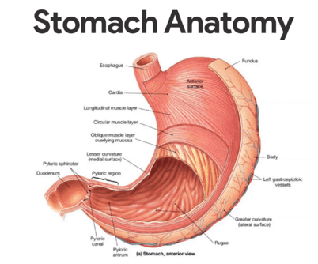
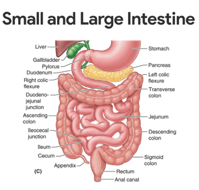
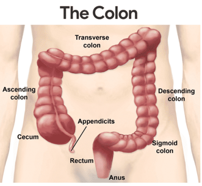
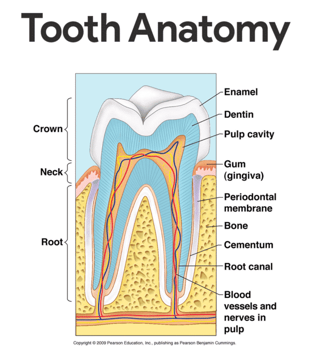
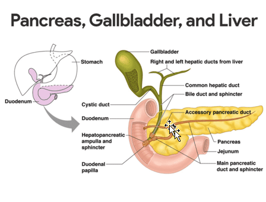

From the mouth, food passes posteriorly into the oropharynx and laryngopharynx.
Esophagus
The esophagus or gullet, runs from the pharynx through the diaphragm to the stomach.
• Size and function. About 25 cm (10 inches) long, it is essentially a passageway that conducts food by peristalsis to the stomach.
• Structure. The walls of the alimentary canal organs from the esophagus to the large intestine are made up of the same four basic tissue layers or tunics.
• Mucosa. The mucosa is the innermost layer, a moist membrane that lines the cavity, or lumen, of the organ; it consists primarily of a surface epithelium, plus a small amount of connective tissue (lamina propria) and a scanty smooth muscle layer.
• Submucosa. The submucosa is found just beneath the mucosa; it is a soft connective tissue layer containing blood vessels, nerve endings, lymph nodules, and lymphatic vessels.
• Muscularis externa. The muscularis externa is a muscle layer typically made up of an inner circular layer and an outer longitudinal layer of smooth muscle cells.
• Serosa. The serosa is the outermost layer of the wall that consists of a single layer of flat serous fluid-producing cells, the visceral peritoneum.
• Intrinsic nerve plexuses. The alimentary canal wall contains two important intrinsic nerve plexuses- the submucosal nerve plexus and the myenteric nerve plexus, both of which are networks of nerve fibers that are actually part of the autonomic nervous system and help regulate the mobility and secretory activity of the GI tract organs.
Stomach
Different regions of the stomach have been named, and they include the following:

• Location. The C-shaped stomach is on the left side of the abdominal cavity, nearly hidden by the liver and the diaphragm.
• Function. The stomach acts as a temporary “storage tank” for food as well as a site for food breakdown.
• Cardiac region. The cardiac region surrounds the cardioesophageal sphincter, through which food enters the stomach from the esophagus.
• Fundus. The fundus is the expanded part of the stomach lateral to the cardiac region.
• Body. The body is the midportion, and as it narrows inferiorly, it becomes the pyloric antrum, and then the funnel-shaped pylorus.
• Pylorus. The pylorus is the terminal part of the stomach and it is continuous with the small intestine through the pyloric sphincter or valve.
• Size. The stomach varies from 15 to 25 cm in length, but its diameter and volume depend on how much food it contains; when it is full, it can hold about 4 liters (1 gallon) of food, but when it is empty it collapses inward on itself.
• Rugae. The mucosa of the stomach is thrown into large folds called rugae when it is empty.
• Greater curvature. The convex lateral surface of the stomach is the greater curvature.
• Lesser curvature. The concave medial surface is the lesser curvature.
• Lesser omentum. The lesser omentum, a double layer of peritoneum, extends from the liver to the greater curvature.
• Greater omentum. The greater omentum, another extension of the peritoneum, drapes downward and covers the abdominal organs like a lacy apron before attaching to the posterior body wall, and is riddled with fat, which helps to insulate, cushion, and protect the abdominal organs.
• Stomach mucosa. The mucosa of the stomach is a simple columnar epithelium composed entirely of mucous cells that produce a protective layer of bicarbonate-rich alkaline mucus that clings to the stomach mucosa and protects the stomach wall from being damaged by acid and digested by enzymes.
• Gastric glands. This otherwise smooth lining is dotted with millions of deep gastric pits, which lead into gastric glands that secrete the solution called gastric juice.
• Intrinsic factor. Some stomach cells produce intrinsic factor, a substance needed for the absorption of vitamin b12 from the small intestine.
• Chief cells. The chief cells produce protein-digesting enzymes, mostly pepsinogens.
• Parietal cells. The parietal cells produce corrosive hydrochloric acid, which makes the stomach contents acidic and activates the enzymes.
• Enteroendocrine cells. The enteroendocrine cells produce local hormones such as gastrin, that are important to the digestive activities of the stomach.
• Chyme. After food has been processed, it resembles heavy cream and is called chyme.
Small Intestine
The small intestine is the body’s major digestive organ.

• Location. The small intestine is a muscular tube extending from the pyloric sphincter to the large intestine.
• Size. It is the longest section of the alimentary tube, with an average length of 2.5 to 7 m (8 to 20 feet) in a living person.
• Subdivisions. The small intestine has three subdivisions: the duodenum, the jejunum, and the ileum, which contribute 5 percent, nearly 40 percent, and almost 60 percent of the small intestine, respectively.
• Ileocecal valve. The ileum meets the large intestine at the ileocecal valve, which joins the large and small intestine.
• Hepatopancreatic ampulla. The main pancreatic and bile ducts join at the duodenum to form the flasklike hepatopancreatic ampulla, literally, the ” liver-pacreatic-enlargement”.
• Duodenal papilla. From there, the bile and pancreatic juice travel through the duodenal papilla and enter the duodenum together.
• Microvilli. Microvilli are tiny projections of the plasma membrane of the mucosa cells that give the cell surface a fuzzy appearance, sometimes referred to as the brush border; the plasma membranes bear enzymes (brush border enzymes) that complete the digestion of proteins and carbohydrates in the small intestine.
• Villi. Villi are fingerlike projections of the mucosa that give it a velvety appearance and feel, much like the soft nap of a towel.
• Lacteal. Within each villus is a rich capillary bed and a modified lymphatic capillary called a lacteal.
• Circular folds. Circular folds, also called plicae circulares, are deep folds of both mucosa and submucosa layers, and they do not disappear when food fills the small intestine.
• Peyer’s patches. In contrast, local collections of lymphatic tissue found in the submucosa increase in number toward the end of the small intestine.
Large Intestine
The large intestine is much larger in diameter than the small intestine but shorter in length.

• Size. About 1.5 m (5 feet) long, it extends from the ileocecal valve to the anus.
• Functions. Its major functions are to dry out indigestible food residue by absorbing water and to eliminate these residues from the body as feces.
• Subdivisions. It frames the small intestines on three sides and has the following subdivisions: cecum, appendix, colon, rectum, and anal canal.
• Cecum. The saclike cecum is the first part of the large intestine.
• Appendix. Hanging from the cecum is the wormlike appendix, a potential trouble spot because it is an ideal location for bacteria to accumulate and multiply.
• Ascending colon. The ascending colon travels up the right side of the abdominal cavity and makes a turn, the right colic (or hepatic) flexure, to travel across the abdominal cavity.
• Transverse colon. The ascending colon makes a turn and continuous to be the transverse colon as it travels across the abdominal cavity.
• Descending colon. It then turns again at the left colic (or splenic) flexure, and continues down the left side as the descending colon.
• Sigmoid colon. The intestine then enters the pelvis, where it becomes the S-shaped sigmoid colon.
• Anal canal. The anal canal ends at the anus which opens to the exterior.
• External anal sphincter. The anal canal has an external voluntary sphincter, the external anal sphincter, composed of skeletal muscle.
• Internal involuntary sphincter. The internal involuntary sphincter is formed by smooth muscles.
Accessory Digestive Organs
Other than the intestines and the stomach, the following are also part of the digestive system:
Teeth
The role the teeth play in food processing needs little introduction; we masticate, or chew, by opening and closing our jaws and moving them from side to side while continuously using our tongue to move the food between our teeth.

• Function. The teeth tear and grind the food, breaking it down into smaller fragments.
• Deciduous teeth. The first set of teeth is the deciduous teeth, also called baby teeth or milk teeth, and they begin to erupt around 6 months, and a baby has a full set (20 teeth) by the age of 2 years.
• Permanent teeth. As the second set of teeth, the deeper permanent teeth, enlarge and develop, the roots of the milk teeth are reabsorbed, and between the ages of 6 to 12 years they loosen and fall out.
• Incisors. The chisel-shaped incisors are adapted for cutting.
• Canines. The fanglike canines are for tearing and piercing.
• Premolars and molars. Premolars (bicuspids) and molars have broad crowns with round cusps ( tips) and are best suited for grinding.
• Crown. The enamel-covered crown is the exposed part of the tooth above the gingiva or gum.
• Enamel. Enamel is the hardest substance in the body and is fairly brittle because it is heavily mineralized with calcium salts.
• Root. The outer surface of the root is covered by a substance called cementum, which attaches the tooth to the periodontal membrane (ligament).
• Dentin. Dentin, a bonelike material, underlies the enamel and forms the bulk of the tooth.
• Pulp cavity. It surrounds a central pulp cavity, which contains a number of structures (connective tissue, blood vessels, and nerve fibers) collectively called the pulp.
• Root canal. Where the pulp cavity extends into the root, it becomes the root canal, which provides a route for blood vessels, nerves, and other pulp structures to enter the pulp cavity of the tooth.
Salivary Glands
Three pairs of salivary glands empty their secretions into the mouth.
• Parotid glands. The large parotid glands lie anterior to the ears and empty their secretions into the mouth.
• Submandibular and sublingual glands. The submandibular and sublingual glands empty their secretions into the floor of the mouth through tiny ducts.
• Saliva. The product of the salivary glands, saliva, is a mixture of mucus and serous fluids.
• Salivary amylase. The clear serous portion contains an enzyme, salivary amylase, in a bicarbonate-rich juice that begins the process of starch digestion in the mouth.
Pancreas
Only the pancreas produces enzymes that break down all categories of digestible foods.

• Location. The pancreas is a soft, pink triangular gland that extends across the abdomen from the spleen to the duodenum; but most of the pancreas lies posterior to the parietal peritoneum, hence its location is referred to as retroperitoneal.
• Pancreatic enzymes. The pancreatic enzymes are secreted into the duodenum in an alkaline fluid that neutralizes the acidic chyme coming in from the stomach.
• Endocrine function. The pancreas also has an endocrine function; it produces hormones insulin and glucagon
Liver
The liver is the largest gland in the body.
• Location. Located under the diaphragm, more to the right side of the body, it overlies and almost completely covers the stomach.
• Falciform ligament. The liver has four lobes and is suspended from the diaphragm and abdominal wall by a delicate mesentery cord, the falciform ligament.
• Function. The liver’s digestive function is to produce bile.
• Bile. Bile is a yellow-to-green, watery solution containing bile salts, bile pigments, cholesterol, phospholipids, and a variety of electrolytes.
• Bile salts. Bile does not contain enzymes but its bile salts emulsify fats by physically breaking large fat globules into smaller ones, thus providing more surface area for the fat-digesting enzymes to work on.
Gallbladder
While in the gallbladder, bile is concentrated by the removal of water.
• Location. The gallbladder is a small, thin-walled green sac that snuggles in a shallow fossa in the inferior surface of the liver.
• Cystic duct. When food digestion is not occurring, bile backs up the cystic duct and enters the gallbladder to be stored.
Physiology of the Digestive System
Specifically, the digestive system takes in food (ingests it), breaks it down physically and chemically into nutrient molecules (digests it), and absorbs the nutrients into the bloodstream, then, it rids the body of indigestible remains (defecates).
Activities Occurring in the Mouth, Pharynx, and Esophagus
The activities that occur in the mouth, pharynx, and esophagus are food ingestion, food breakdown, and food propulsion.
Food Ingestion and Breakdown
Once food is placed in the mouth, both mechanical and chemical digestion begin.
• Physical breakdown. First, the food is physically broken down into smaller particles by chewing.
• Chemical breakdown. Then, as the food is mixed with saliva, salivary amylase begins the chemical digestion of starch, breaking it down into maltose.
• Stimulation of saliva. When food enters the mouth, much larger amounts of saliva pour out; however, the simple pressure of anything put into the mouth and chewed will also stimulate the release of saliva.
• Passageways. The pharynx and the esophagus have no digestive function; they simply provide passageways to carry food to the next processing site, the stomach.
Food Propulsion – Swallowing and Peristalsis
For food to be sent on its way to the mouth, it must first be swallowed.
• Deglutition. Deglutition, or swallowing, is a complex process that involves the coordinated activity of several structures (tongue, soft palate, pharynx, and esophagus).
• Buccal phase of deglutition. The first phase, the voluntary buccal phase, occurs in the mouth; once the food has been chewed and well mixed with saliva, the bolus (food mass) is forced into the pharynx by the tongue.
• Pharyngeal-esophageal phase. The second phase, the involuntary pharyngeal-esophageal phase, transports food through the pharynx and esophagus; the parasympathetic division of the autonomic nervous system controls this phase and promotes the mobility of the digestive organs from this point on.
• Food routes. All routes that the food may take, except the desired route distal into the digestive tract, are blocked off; the tongue blocks off the mouth; the soft palate closes off the nasal passages; the larynx rises so that its opening is covered by the flaplike epiglottis.
• Stomach entrance. Once food reaches the distal end of the esophagus, it presses against the cardioesophageal sphincter, causing it to open, and food enters the stomach.
Activities of the Stomach
The activities of the stomach involve food breakdown and food propulsion.
Food Breakdown
The sight, smell, and taste of food stimulate parasympathetic nervous system reflexes, which increase the secretion of gastric juice by the stomach glands
• Gastric juice. Secretion of gastric juice is regulated by both neural and hormonal factors.
• Gastrin. The presence of food and a rising pH in the stomach stimulate the stomach cells to release the hormone gastrin, which prods the stomach glands to produce still more of the protein-digesting enzymes (pepsinogen), mucus, and hydrochloric acid.
• Pepsinogen. The extremely acidic environment that hydrochloric acid provides is necessary, because it activates pepsinogen to pepsin, the active protein-digesting enzyme.
• Rennin. Rennin, the second protein-digesting enzyme produced by the stomach, works primarily on milk protein and converts it to a substance that looks like sour milk.
• Food entry. As food enters and fills the stomach, its wall begins to stretch (at the same time as the gastric juices are being secreted).
• Stomach wall activation. Then the three muscle layers of the stomach wall become active; they compress and pummel the food, breaking it apart physically, all the while continuously mixing the food with the enzyme-containing gastric juice so that the semifluid chyme is formed.
Food Propulsion
Peristalsis is responsible for the movement of food towards the digestive site until the intestines.
• Peristalsis. Once the food has been well mixed, a rippling peristalsis begins in the upper half of the stomach, and the contractions increase in force as the food approaches the pyloric valve.
• Pyloric passage. The pylorus of the stomach, which holds about 30 ml of chyme, acts like a meter that allows only liquids and very small particles to pass through the pyloric sphincter; and because the pyloric sphincter barely opens, each contraction of the stomach muscle squirts 3 ml or less of chyme into the small intestine.
• Enterogastric reflex. When the duodenum is filled with chyme and its wall is stretched, a nervous reflex, the enterogastric reflex, occurs; this reflex “puts the brakes on” gastric activity and slows the emptying of the stomach by inhibiting the vagus nerves and tightening the pyloric sphincter, thus allowing time for intestinal processing to catch up.
Activities of the Large Intestine
The activities of the large intestine are food breakdown and absorption and defecation.
Food Breakdown and Absorption
What is finally delivered to the large intestine contains few nutrients, but that residue still has 12 to 24 hours more to spend there.
• Metabolism. The “resident” bacteria that live in its lumen metabolize some of the remaining nutrients, releasing gases (methane and hydrogen sulfide) that contribute to the odor of feces.
• Flatus. About 50 ml of gas (flatus) is produced each day, much more when certain carbohydrate-rich foods are eaten.
• Absorption. Absorption by the large intestine is limited to the absorption of vitamin K, some B vitamins, some ions, and most of the remaining water.
• Feces. Feces, the more or less solid product delivered to the rectum, contains undigested food residues, mucus, millions of bacteria, and just enough water to allow their smooth passage.
Propulsion of the Residue and Defecation
When presented with residue, the colon becomes mobile, but its contractions are sluggish or short-lived.
• Haustral contractions. The movements most seen in the colon are haustral contractions, slow segmenting movements lasting about one minute that occur every 30 minutes or so.
• Propulsion. As the haustrum fills with food residue, the distension stimulates its muscle to contract, which propels the luminal contents into the next haustrum.
• Mass movements. Mass movements are long, slow-moving, but powerful contractile waves that move over large areas of the colon three or four times daily and force the contents toward the rectum.
• Rectum. The rectum is generally empty, but when feces are forced into it by mass movements and its wall is stretched, the defecation reflex is initiated.
• Defecation reflex. The defecation reflex is a spinal (sacral region) reflex that causes the walls of the sigmoid colon and the rectum to contract and anal sphincters to relax.
• Impulses. As the feces is forced into the anal canal, messages reach the brain giving us time to make a decision as to whether the external voluntary sphincter should remain open or be constricted to stop passage of feces.
• Relaxation. Within a few seconds, the reflex contractions end and rectal walls relax; with the next mass movement, the defecation reflex is initiated again.